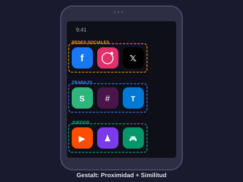
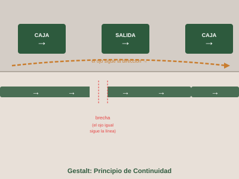
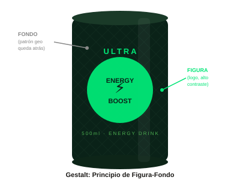
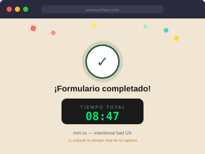
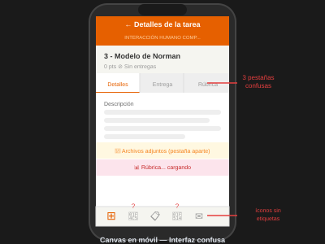
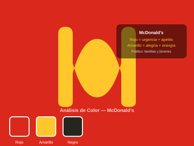
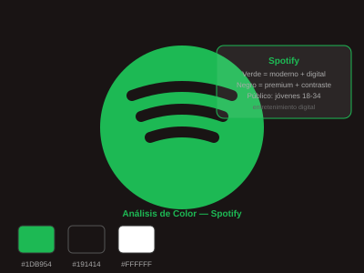
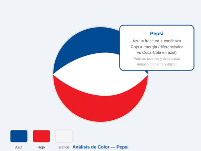
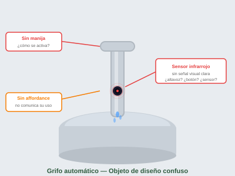
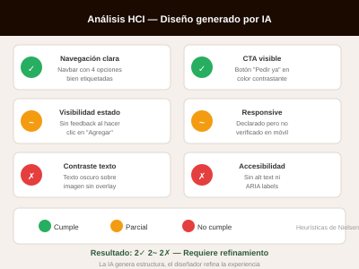

Gestalt
La psicología de Gestalt explica cómo el cerebro organiza visualmente la información. La tarea fue encontrar 3 objetos cotidianos que apliquen alguno de sus principios y analizarlos.

📷 Insertar foto de la pantalla de inicio del celular con las apps agrupadas
Íconos de apps en el celular
Proximidad Similitud¿Dónde? Pantalla de inicio de mi celular, en casa.
Lo que vi fue que tenía varias apps agrupadas en carpetas según el tipo: redes sociales juntas, herramientas de trabajo en otra carpeta, y juegos en otra. Sin que nadie me lo explicara, entendí de inmediato que esas apps "pertenecen" al mismo grupo, solo por cómo están ubicadas y porque visualmente se parecen en tamaño e ícono.
Análisis: El principio de proximidad agrupa apps cercanas como una unidad. El de similitud funciona porque los íconos tienen el mismo tamaño y bordes redondeados, lo que hace que el cerebro los perciba como del mismo "tipo". Juntos facilitan muchísimo la navegación.

📷 Insertar foto de señalización de pasillo o supermercado con flechas direccionales
Señalización en pasillos del supermercado
Continuidad¿Dónde? Supermercado cerca de la universidad, pasillo central.
El piso tenía una franja de color que recorría todo el pasillo principal, y había flechas cada cierto tramo apuntando hacia la caja. Aunque estaba distraído buscando algo, mi vista seguía automáticamente esa línea sin que yo lo decidiera conscientemente.
Análisis: El principio de continuidad hace que el ojo siga una trayectoria sin interrupciones percibidas. En diseño de tiendas esto es deliberado para guiar al cliente hacia cajas o secciones específicas. Es un uso muy claro de Gestalt aplicado al espacio físico.

📷 Insertar foto del empaque de bebida o producto con contraste figura-fondo claro
Empaque de lata de bebida energética
Figura-Fondo¿Dónde? Tienda de la universidad, refrigerador de bebidas.
El empaque tenía un logo grande en colores brillantes sobre un fondo oscuro. Lo primero que vi fue el logo, no el fondo. Luego me fijé que el fondo tenía un patrón geométrico sutil que, si lo miraba directamente, empezaba a "competir" con el logo.
Análisis: El principio de figura-fondo establece que el cerebro separa automáticamente un objeto del fondo que lo rodea. En el empaque, el alto contraste asegura que el logo sea siempre la figura y el patrón quede relegado al fondo. También hay algo de cierre en cómo el logo incompleto igual se percibe como completo.
Importancia de HCI
La actividad consistió en entrar a userinyerface.com y completar el formulario, registrando el tiempo que tomó. El sitio está diseñado deliberadamente para ser frustrante.
¿Qué es User Inyerface?
User Inyerface es un sitio web creado para demostrar, de forma bastante directa, qué pasa cuando una interfaz ignora completamente los principios de HCI. No está roto por accidente; cada elemento está diseñado para confundir al usuario de alguna forma.
El objetivo era llenar un formulario de registro simple. Suena fácil. No lo es.
Problemas encontrados
- El botón de "aceptar" y el de "rechazar" estaban intercambiados visualmente.
- El checkbox de términos requería desmarcar, no marcar.
- El cursor desaparecía o apuntaba en dirección contraria en algunos campos.
- Los campos de texto tenían el placeholder en letras difíciles de leer.
- El campo de contraseña mostraba todo el texto, y no había forma obvia de ocultarlo.
- Los colores no daban ninguna pista sobre qué era interactivo y qué era decorativo.
- El selector de fecha tenía el orden invertido (año-mes-día al revés).

¿Qué enseña esto sobre HCI?
El sistema no indicaba si el usuario hacía algo bien o mal. No había mensajes claros de error ni confirmaciones.
Los elementos interactivos no se comportaban de forma predecible. Lo que funcionaba en un campo no funcionaba en otro.
No había forma de deshacer acciones ni de navegar hacia atrás sin perder el progreso.
Los elementos no comunicaban visualmente para qué servían. Un botón parecía texto decorativo y viceversa.
Modelo de Interacción de Norman
El Modelo de Norman describe las 7 etapas que atraviesa una persona al interactuar con un sistema. Lo apliqué a una situación real que me resultó confusa: pagar en una máquina de parqueo.
La situación
Estaba en el parqueo de un centro comercial y necesitaba pagar antes de salir. La máquina de pago tenía una pantalla táctil, un lector de ticket, un lector de tarjeta y varios botones físicos. No quedaba claro qué hacer primero.
El problema no fue que la máquina tuviera muchas opciones, sino que no quedaba claro cuál era el siguiente paso después de insertar el ticket. La pantalla mostraba varias cosas al mismo tiempo y ningún botón estaba claramente etiquetado como "continuar" o "pagar".
Hubo un momento en que pensé que había pagado, pero la barrera no abrió. Tuve que volver a la máquina y darme cuenta de que el proceso tenía un paso más que no había visto.
Las 7 Etapas del Modelo de Norman
| # | Etapa | ¿Qué ocurrió? | ¿Qué falló? | Tipo |
|---|---|---|---|---|
| 1 | Formar la meta | Quería pagar el parqueo y salir del centro comercial. | No hubo falla aquí; la meta era clara desde el inicio. | — |
| 2 | Formar la intención | Decidí usar la máquina de pago en la entrada del parqueo. | No sabía si tenía que pagar ahí o directamente en la barrera de salida. | Ejecución |
| 3 | Especificar la acción | Intenté identificar qué hacer primero: ¿insertar ticket, tocar la pantalla, seleccionar método de pago? | La máquina no tenía una secuencia visible de pasos. Todo parecía igualmente importante. | Ejecución |
| 4 | Ejecutar la acción | Inserté el ticket, la pantalla mostró el monto. Pagué con tarjeta. | Después de pagar, la pantalla volvió al menú inicial sin ningún mensaje de confirmación claro. | Ejecución |
| 5 | Percibir el estado del sistema | No vi ningún ticket de salida ni mensaje de "pago exitoso" grande y visible. | El feedback fue mínimo. Solo apareció un texto pequeño en la parte de abajo de la pantalla. | Evaluación |
| 6 | Interpretar el estado | Asumí que el pago había sido exitoso porque la pantalla volvió al inicio. | Mi interpretación fue incorrecta. Faltaba retirar un comprobante físico de la máquina. | Evaluación |
| 7 | Evaluar el resultado | Me dirigí al carro. La barrera no abrió. Tuve que regresar y retirar el comprobante. | El sistema no comunicó que había un paso adicional obligatorio antes de salir. | Falla crítica |
Interfaces Extrañas
La tarea fue identificar una app o página confusa en el uso diario, explicar por qué lo es y sugerir mejoras concretas. Elegí Canvas desde el celular.
Canvas en móvil
Contexto: Quería revisar las instrucciones de una tarea que el catedrático había subido antes del inicio de clase. Abrí la app de Canvas en el celular esperando ver la descripción directamente.
¿Qué quería hacer? Ver los detalles de una tarea específica, incluyendo la rúbrica y los archivos adjuntos, en menos de un minuto.
¿Por qué fue confusa? La información de la tarea estaba distribuida en varias pestañas dentro de la propia tarea. La descripción estaba en una sección, los adjuntos en otra, y la rúbrica en una tercera que a veces no cargaba. Además, el menú de navegación en la parte inferior tenía íconos sin texto que no siempre eran intuitivos.
Heurísticas relacionadas

Consejos concretos para mejorarla
Mostrar descripción, archivos y rúbrica en una sola pantalla con scroll, sin pestañas separadas. Menos pasos, más claridad.
Los íconos de la barra inferior deberían tener texto debajo, especialmente para usuarios nuevos. "Tablero", "Calendario", "Tareas", etc.
Cuando un adjunto o la rúbrica están cargando, debería haber un spinner o mensaje claro. Ahora simplemente aparece vacío.
Tener una barra de búsqueda visible para encontrar tareas por nombre, sin tener que navegar por curso → módulo → tarea.
Registro de 3 Interacciones Reales
Registré tres interacciones cotidianas respondiendo 5 preguntas por cada una para analizar qué funcionó, qué no, y cómo se podría mejorar.
Dispensador de agua en la universidad
Objeto físico — Campus UVGMáquina POS al pagar en tienda
Dispositivo físico — Tienda de convenienciaRevisar entrega pendiente en Canvas
Aplicación móvil — Plataforma universitariaAnálisis de Colores en Logos
Durante la semana me fijé en logos que aparecieron en redes sociales y en la calle. Elegí tres marcas que me llamaron la atención y analicé qué comunican con sus colores.
McDonald's
Colores principales: Rojo, amarillo dorado y negro.
El rojo es un color que estudios de psicología del color asocian con urgencia, hambre y energía. El amarillo transmite alegría y accesibilidad. Juntos crean una combinación que es difícil de ignorar, especialmente en una valla publicitaria.
Público objetivo: Muy amplio, pero especialmente familias y jóvenes que buscan rapidez y precio accesible.

Spotify
Colores principales: Verde brillante (#1DB954) y negro casi puro.
El verde de Spotify es muy específico: no es el verde natural de la naturaleza ni el verde institucional. Es un verde brillante, casi eléctrico, que se asocia con modernidad y energía digital. El fondo negro lo hace destacar todavía más.
Público objetivo: Principalmente jóvenes y adultos jóvenes interesados en música, podcasts y cultura digital.

Pepsi
Colores principales: Azul, rojo y blanco.
El azul dominante de Pepsi transmite confianza y frescura. Es interesante que Pepsi usa azul donde su principal competidor (Coca-Cola) usa rojo. Parece una decisión de diferenciación: si ellos son el rojo apasionado, nosotros somos el azul fresco y moderno.
Público objetivo: Similar a Coca-Cola, pero con una imagen ligeramente más joven y orientada a lo digital y deportivo.

Diseños de Objetos
La tarea fue encontrar un objeto cotidiano que parezca extraño o cuyo uso no sea obvio a primera vista. Elegí el grifo de sensor automático en un baño público.

Grifo automático de sensor en baño público
¿Dónde lo encontré? En el baño de un centro comercial, instalado recientemente como parte de una remodelación.
¿Por qué parece extraño? El grifo no tiene manijas ni perillas. Es solo un tubo de metal con un pequeño punto negro en la parte inferior (el sensor). No hay ningún texto que diga "ponga las manos aquí" ni una flecha. Solo el punto negro.
¿Qué pistas visuales tiene? El sensor tiene una pequeña luz roja intermitente que podría indicar que está activo, pero también podría interpretarse como un error. No hay más pistas visuales que el mismo tubo.
¿Cómo creo que funciona? Tiene un sensor infrarrojo que detecta calor o movimiento de las manos. Cuando las manos están a la distancia correcta, activa el agua automáticamente por unos segundos.
Sin affordance claro
La palabra "affordance" en diseño se refiere a la capacidad de un objeto de comunicar su función. Este grifo falla en eso: no hay ninguna señal visual que indique "pon las manos aquí". El sensor podría ser un altavoz, un lector de código QR o simplemente un adorno.
No confirma que funcionó
Cuando el agua sale, uno asume que el sensor funcionó. Pero si las manos no están bien posicionadas, simplemente no pasa nada. No hay sonido, luz o mensaje que diga "no te detecto". Uno solo puede probar mover las manos.
Señalización simple
Bastaría con un pequeño adhesivo que muestre el ícono de unas manos con una flecha hacia el sensor. Una luz que cambie de rojo a verde cuando detecta las manos también funcionaría perfectamente y no requeriría hardware adicional.
Diseño de Página de Comida con IA
Le pedí a una IA que diseñara una página web para un restaurante de delivery. Acá está el prompt que usé, el resultado que generó, y mi análisis de qué tan bien cumple con HCI.
Prompt utilizado
Capturas del resultado generado

Análisis del diseño
| Criterio | ¿Cumple? | Observación |
|---|---|---|
| Visibilidad del estado del sistema | Parcial | El diseño no incluía estados de carga ni mensajes de confirmación de pedido. El botón CTA existe pero no comunica qué pasa después de presionarlo. |
| Consistencia de navegación | Sí | El navbar tenía los 4 elementos pedidos (inicio, menú, pedidos, contacto) y se mantenía visible en todas las secciones. |
| Teoría del color | Parcial | Los colores usados eran cálidos (naranja y rojo), coherentes con comida. Sin embargo, el contraste entre texto y fondo en algunas tarjetas era insuficiente. |
| Llamado a la acción visible | Sí | El botón de "Pedir ahora" en el hero era prominente y de color contrastante. Estaba bien ubicado. |
| Tarjetas de productos | Sí | Las tarjetas mostraban nombre, precio e imagen como se pidió. El precio estaba destacado, lo cual ayuda a la decisión de compra. |
| Accesibilidad y contraste | No | Algunos textos sobre fondo de imagen no tenían suficiente contraste para ser legibles. No se mencionó el uso de texto alternativo para imágenes. |
| Responsive / adaptación móvil | Parcial | La IA indicó que el diseño era responsive, pero en las capturas no fue posible verificar el comportamiento en pantallas pequeñas. |
| Sección de cómo funciona el delivery | Sí | Se incluyó una sección de 3 pasos con íconos y texto claro. Visualmente era fácil de seguir. |
¿Qué mejoraría del diseño?
Asegurar que todo texto sobre imagen o color tenga un overlay oscuro o claro que garantice legibilidad. Mínimo ratio 4.5:1 según WCAG.
Los botones deberían tener un estado hover visible y un estado "procesando" cuando se confirma un pedido, para que el usuario sepa que su acción fue registrada.
Revisar que los títulos, subtítulos y textos de cuerpo tengan tamaños claramente diferenciados. En algunas secciones todo parecía del mismo peso visual.
Agregar la posibilidad de filtrar por categoría directamente en la sección del menú, sin tener que hacer scroll para encontrar lo que uno busca.
Conclusión General
Después de hacer este diario me di cuenta de que HCI no solo aplica a aplicaciones o páginas web, sino también a objetos comunes que usamos todos los días. Muchas veces uno culpa al usuario cuando algo no se entiende, pero en realidad el diseño también tiene mucha responsabilidad en eso.
HCI está en todas partes
Un grifo, una máquina de parqueo, un dispensador de agua: todos son sistemas que requieren interacción, y todos pueden diseñarse mejor o peor.
Bonito ≠ usable
Una interfaz puede ser visualmente atractiva y seguir siendo frustrante. El diseño visual y la experiencia de usuario tienen que ir juntos.
Los colores comunican
Los colores no son solo estéticos; transmiten jerarquía, urgencia, confianza o acción. Elegirlos mal puede confundir al usuario aunque el resto esté bien.
La retroalimentación es clave
El sistema siempre debe decirle al usuario qué pasó después de una acción. Sin esa señal, el usuario asume cosas que pueden ser incorrectas.